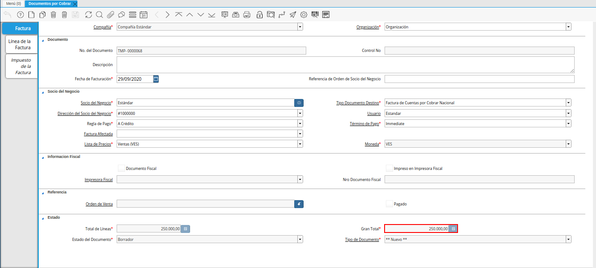

4.2.1. Registro de Orden de Venta¶
Ubique y seleccione en el menú de ADempiere la carpeta “Gestión de Ventas”, luego seleccione la carpeta “Órdenes de Venta”, por último seleccione la ventana “Órdenes de Venta”.

Imagen 1. Menú de ADempiere
Podrá visualizar la ventana “Órdenes de Venta”, con todos los registros de órdenes de venta cargados a ADempiere.

Imagen 2. Ventana Órdenes de Venta
Seleccione el icono “Registro Nuevo” en la barra de herramientas de ADempiere, para realizar un nuevo documento.

Imagen 3. Icono Registro Nuevo
Seleccione en el campo “Organización”, la organización para la cual esta realizando el documento “Orden de Venta”.

Imagen 4. Campo Organización
Warning
El valor en el campo organización debe ser diferente del símbolo (*) ya que éste símbolo hace referencia a todas las organizaciones.
En el campo “No. de Documento”, no es necesario ingresarlo en forma manual, al momento de realizar un registro, ADempiere genera un número de secuencia automáticamente para el documento, al seleccionar la opción guardar del nuevo registro de orden de venta.

Imagen 5. Campo No. del Documento
Introduzca en el campo “Referencia de Orden de Socio del Negocio”, la referencia de orden del socio del negocio.

Imagen 6. Campo Referencia de Orden de Socio del Negocio
En el campo “Descripción”, introduzca una breve descripción referente a la orden de venta que se está realizando, este campo es opcional.

Imagen 7. Campo Descripción
Seleccione en el campo “Fecha de la Orden”, la fecha de elaboración del documento “Orden de Venta”.

Imagen 8. Campo Fecha de la Orden
Seleccione en el campo “Socio del Negocio”, el socio del negocio cliente al cual se le realizará la venta.

Imagen 9. Campo Socio del Negocio
Seleccione el tipo de documento a generar en el campo “Tipo de Documento Destino”, la selección de este define el comportamiento del documento que se esta elaborando, dicho comportamiento se encuentra explicado en el documento “Tipo de Documento” elaborado por ERPyA.
Imagen 10. Campo Tipo de Documento Destino
Seleccione en el campo “Dirección del Socio del Negocio”, la dirección de localización del socio del negocio.

Imagen 11. Campo Dirección del Socio del Negocio
Seleccione en el campo “Dirección Factura”, la dirección a ser impresa en la factura para la entrega del producto.

Imagen 12. Campo Dirección Factura
Seleccione en el campo “Usuario”, el usuario de contacto con el socio del negocio cliente al cual se le realizará la venta.

Imagen 13. Campo Usuario
Seleccione en el campo “Contacto Entrega Directa”, el usuario de contacto con el socio del negocio cliente al cual se le realizará la venta.

Imagen 14. Campo Contacto Entrega Directa
Seleccione en el campo “Almacén”, el almacén donde se encuentra el producto que se va a vender.

Imagen 15. Campo Almacén
Seleccione en el campo “Lista de Precios”, la lista de precios que será utilizada para la venta de los productos al socio del negocio cliente.

Imagen 16. Campo Lista de Precios
Seleccione en el campo “Término de Pago”, las condiciones de pago que indican el método y tiempo de pago para esta transacción.

Imagen 17. Campo Término de Pago
Seleccione en el campo “Moneda”, la moneda que será utilizada para la venta de los productos al socio del negocio cliente.

Imagen 18. Campo Moneda
Warning
Recuerde guardar el registro de la ventana, seleccionando el icono “Guardar Cambios” ubicado en la barra de herramientas, una vez guardado el nuevo registro, podrá avanzar a la pestaña “Línea de la Orden”.
Seleccione la pestaña “Línea de la Orden” y proceda a seleccionar el “Producto o Servicio” a vender. Si la orden de venta contiene varios productos, el campo “Nro. de Línea”, indicará el orden y despliegue de los mismos dentro del documento. Una vez que guarde el primer producto, deberá seleccionar el icono “Registro Nuevo”, incrementando así el número de líneas por productos en el documento.
Warning
El campo “Orden de Venta”, viene precargado de la pestaña principal “Orden”.

Imagen 19. Pestaña Línea de la Orden
Seleccione en el campo “Producto”, el producto a vender al socio del negocio cliente.

Imagen 20. Campo Producto
Introduzca en el campo “Descripción”, una breve descripción sobre el producto o servicio seleccionado para la venta.

Imagen 21. Campo Descripción
Seleccione en el campo “Cantidad”, la cantidad a vender del producto o servicio seleccionado.

Imagen 22. Campo Cantidad
Seleccione en el campo “UM”, la unidad de medida a vender del producto o servicio seleccionado.

Imagen 23. Campo UM
Introduzca en el campo “Precio”, el precio por unidad de medida del producto o servicio seleccionado para la venta.

Imagen 24. Campo Precio
El campo “Cantidad Ordenada”, indica la cantidad de un producto que fue ordenada.

Imagen 25. Campo Cantidad Ordenada
Introduzca en el campo “% Descuento”, el descuento aplicado a la venta.
El campo “% Descuento”, indica el descuento aplicado o tomado como un porcentaje.

Imagen 26. Campo Descuento
Seleccione en el campo “Impuesto”, el impuesto a ser aplicado al producto o servicio seleccionado.

Imagen 27. Campo Impuesto
El campo “Cantidad Reservada, indica la cantidad del producto que ha sido reservado para otras órdenes.

Imagen 28. Campo Cantidad Reservada
El campo “Cantidad Entregada, indica la cantidad de un producto que ha sido entregado.

Imagen 29. Campo Cantidad Entregada
El campo “Cantidad Facturada, indica la cantidad de un producto que ha sido facturado.

Imagen 30. Campo Cantidad Facturada
El campo “PMVP, indica el precio marcado de venta al público.

Imagen 31. Campo PMVP
Podrá apreciar en el campo “Neto de Línea”, el monto neto del producto por la cantidad ingresada.

Imagen 32. Campo Neto de Línea
El checklkist “Procesado, indica que un documento ha sido procesado.

Imagen 33. Campo Procesado
Warning
Recuerde guardar el registro de la pestaña “Línea de la Orden” con el icono “Guardar Cambios” de la barra de herramientas de ADempiere, antes de cambiar a la ventana principal “Orden”.
Regrese a la pestaña principal “Orden” para completar el documento que se encuentra realizando.

Imagen 34. Pestaña Orden
El campo “Total de Líneas”, indica el total de todas las líneas en la moneda del documento.

Imagen 35. Campo Total del Líneas
El campo “Gran Total”, indica el total del documento incluyendo impuestos y totales de fletes.

Imagen 36. Campo Gran Total
El campo “Estado del Documento”, indica el estado del documento en este momento, para cambiar el estado del documento utilice la opción “Procesar Orden”, desplegada por el icono “Proceso”, ubicado en la barra de herramientas de ADempiere.
Imagen 37. Campo Estado de Documento
El campo “Tipo de Documento”, indica el tipo de documento que determina la secuencia del documento o las reglas del proceso.
Imagen 38. Campo Tipo de Documento
Seleccione la opción “Procesar Orden”, desplegada por el icono “Proceso”, ubicado en la barra de herramientas de ADempiere.

Imagen 39. Opción Procesar Orden en el Icono Proceso
Seleccione la acción “Completar” y la opción “OK”, para completar el documento “Orden de Venta”.

Imagen 40. Opción Completar
Al completar el documento “Orden de Venta”, se genera de manera automática y en estado “Completo”, el documento de factura por cobrar con la orden de venta asociada.

Imagem 41. Número de Factura Generada
Dicha factura por cobrar se puede visualizar en la ventana “Documentos por Cobrar”, al buscar la misma por el número de documento generado en la parte inferior izquierda de la ventana “Órdenes de Venta”.

Imagen 42. Consulta de Factura Generada